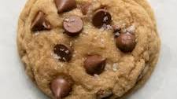

Home
Classic Chocolate

Description
Classic Chocolate Chip Cookies are the quintessential American comfort dessert, beloved for their perfect balance of textures and flavors. When done right, they embody a delightful contrast: a crispy, golden-brown edge that gives way to a chewy, soft, and slightly gooey center.
Ingredients
- 1 cup (2 sticks) unsalted butter, softened
- 3/4 cup granulated sugar
- 3/4 cup packed light brown sugar
- 2 large eggs
- 1 tsp vanilla extract
- 2 1/4 cups all-purpose flour
- 1 tsp baking soda
- 1/2 tsp salt
- 1 cup (about 6 oz) chocolate chips (milk, semi-sweet, or dark)
Steps
- Preheat & Prepare: Preheat oven to 375°F (190°C). Line baking sheets with parchment paper.
-
Cream Butter and Sugars: In a large bowl, cream together the softened butter, granulated sugar, and brown sugar with an electric mixer until light and fluffy.
-
Add Wet Ingredients: Beat in the eggs one at a time, then stir in the vanilla extract.
-
Combine Dry Ingredients: In a separate medium bowl, whisk together the flour, baking soda, and salt.
-
Combine Wet and Dry: Gradually add the dry ingredients to the wet ingredients, mixing on low speed until just combined. Do not overmix.
-
Fold in Chocolate Chips: Stir in the chocolate chips by hand until evenly distributed.
-
Scoop and Bake: Drop rounded tablespoons of dough onto the prepared baking sheets, about 2 inches apart.
-
Bake: Bake for 9-11 minutes, or until the edges are golden brown and the centers are still slightly soft.
-
Cool: Let cookies cool on the baking sheets for a few minutes before transferring them to a wire rack to cool completely.